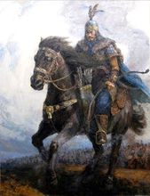

冒顿单于
冒顿原为其父头曼单于的太子，后来头曼单于所爱的瘀氏生了个小儿子。头曼单于就想废除冒顿而立小儿子为太子，于是便派冒顿到月氏去当人质。冒顿即已来到月氏当了人质，而头曼却急攻月氏，月氏欲杀冒顿，冒顿偷了月氏的良马，骑着它逃回匈奴。头曼单于认为他勇猛，就命令他统领一万骑兵。冒顿就制造了一种响箭，训练他的部下骑马射箭的本领，下令说：“凡是我的响箭所射的目标，如果谁不跟着我全力去射击它，就斩首。”首先射猎鸟兽，有人不射响箭所射的目标，冒顿就把他杀了。不久，冒顿以响箭射击自己的良马，左右之人有不敢射击的，冒顿立即杀了他们。过了些日子，冒顿又用响箭射击自己的心爱的妻子，左右之人有感到恐惧的，不敢射击，冒顿又把他们杀了。过些日子，冒顿出去打猎，用响箭射击单于的良马，左右之人都跟着射。于是冒顿知道他左右的人都是可以用的人。他跟随头曼单于去打猎，用响箭射击头曼单于的头，他左右的人也都跟着把箭射向头曼单于，头曼当场身亡。之后冒顿又把他的后母及弟弟还有不服从他的大臣全部杀死。自立为单于。
建立霸权
冒顿当了单于后，这时东胡强大兴盛，听说冒顿杀父自立，决计先礼后兵，就派使者对冒顿说，想得到头曼的千里马。冒顿问群臣，群臣都说：“千里马是匈奴的宝马，不要给。”冒顿说：“怎可同人家是邻国却吝惜一匹马呢？”于是就把千里马给了东胡。过了一段时间，东胡以为冒顿怕他，就派使者对冒顿说，想要单于的一个阏氏。冒顿又询问左右之臣，左右大臣皆发怒说：“东胡没有道理，竟然想要阏氏，请出兵攻打他。”冒顿说：“怎可同人家为领国却吝惜一个女人呢？”于是就把自己喜爱的阏氏送给了东胡。东胡王愈来愈骄傲，向西进犯侵扰。东胡与匈奴之间有一块空地，没人居住，这地方有一千多里，双方都在这空地的两边修起哨所。东胡派使者对冒顿说：“匈奴同我们交界的哨所以外的空地，你们匈奴不能去，我们想占有它。”冒顿征求群臣意见，群臣中有人说：“这是被丢弃的空地，给他们也可以，不给他们也可以。”于是冒顿大怒，说：“土地，是国家的根本，怎可给他们！”于是冒顿杀掉了那些说给东胡空地的人杀了。立即上马，命令国内如有后退者就杀头，于是他率军向东袭击东胡。
东胡最初轻视匈奴，因此没做防备。等到冒顿领兵到来，一开战东胡就大败，东胡王也被消灭，匈奴俘虏掠夺了东胡百姓和牲畜财产。
此后冒顿又乘胜发兵，向西驱逐走月氏，向南吞并楼烦等部落，还收复了被秦国蒙恬夺取的匈奴领地，占领了秦朝北部的部分地区，经过一系列的大征伐，北方各族无不臣服匈奴，至此，冒顿雄踞大漠南北，直接威胁中原。统一了现在的蒙古草原，建立了强大的匈奴帝国。匈奴帝国疆域十分广阔，疆域最东达到辽河流域，最西到达葱岭（现帕米尔高原），南达秦长城，北抵贝加尔湖一带。这也是匈奴帝国史上最强大的时期。
这时汉军正与项羽的大军相互抗争，中原地区被战争搞得疲惫不堪，所以冒顿才能独自强大，拥有能拉弓射箭的军队三十余万。后来，冒顿又征服了北方的浑庚、屈射、丁零、鬲昆、薪犁诸国。于是匈奴的贵族、大臣都心服冒顿，认为冒顿单于是贤能的。
白登之围
这时，刘邦刚刚平定了中原，把韩王信改派到代地，建都马邑城。公元前201年（汉高祖六年），匈奴大规模进攻马邑，韩王信投降了匈奴。匈奴得到了韩信，于是率兵向南越过了句注山，攻打太原，直到晋阳城下。
公元前200年（汉高祖七年），刘邦亲自领兵前去迎击匈奴，正遇上冬天严寒下雪的天气，将士冻掉手指的有十分之二三，于是冒顿假装失败逃跑，引诱汉军。汉军追赶冒顿，冒顿把他的精锐军队隐藏起来，只出现了一些老弱残兵。
于是汉朝出动全部军队，多半是步兵，共三十二万人，向北追击匈奴。刘邦到达平城时，汉朝的步兵还未全到，冒顿指挥他的四十万精锐骑兵，在白登山把刘邦包围起来。七天之内，汉军内外不能相互救助军粮。匈奴的骑兵，在西方的全是白马，在东方的全是青马，在北方的全是黑马，在南方的全是赤色马。
在陈平的建议下，刘邦派使者秘密地送给阏氏很多礼物，阏氏就对冒顿说：“两方的君王不能相互围困。如果得到汉朝的土地，单于终究是不能在那里居住的。而且汉王也有神的帮助，希望单于认真考虑这件事。”冒顿与韩王信的将军王黄和赵利约定了会师的日期，但王黄与赵利的军队没按时到来，冒顿疑心他们同汉军有预谋，就采纳了阏氏的建议，解除了包围圈的一角。于是刘邦命令战士都拉满弓，箭上弦，面朝外，从冒顿解围的那个通道一直冲出来，最后同汉朝大军相会合。冒顿于是领兵而去，而刘邦也率兵归来，派刘敬到匈奴缔结和亲的盟约。
侵扰汉地
此后，韩王信当上匈奴的将军，他同赵利和王黄屡次违背汉与匈奴所订的盟约，侵扰掠夺代郡和云中郡。过了不久的时间，汉朝将军陈豨谋反，又合韩信合谋进攻代地。汉朝派遣樊哙前去抵御他们，重新攻占了代郡、雁门和云中等郡县，但却没有越过边塞。这时，匈奴因为一些汉朝的将军前来投降，所以冒顿常常往来于代地，进行侵扰劫夺活动。
于是汉朝对此感到忧虑，刘邦派刘敬送汉朝皇族的公主去给单于当阏氏，每年奉送给匈奴一定数量的棉絮、缯、酒、米和食物，相互结为兄弟，实行和亲政策，冒顿才稍为停止侵扰活动。后来，燕王卢绾造反，率领他的党徒数千人投降了匈奴，往来于上谷以东，给当地人造成苦难。
慢书辱后
公元前195年（汉十二年），刘邦驾崩，冒顿写信给吕后说：“我是孤独寂寞的君主，生在沼泽，长在草原，我多次到边境来，希望能到中原游览一番。陛下独立为君，也是孤独寂寞，一个人居住，我们两个寡居的君主都很不快乐，无以自娱，还不如我们以己所有，换己所无。”吕后阅读信后，认为自己受到了极大的挑衅和侮辱，准备杀掉匈奴使者，发兵征讨匈奴。这时候降臣季布劝阻作罢，称匈奴就如同禽兽，不值得为他们的话动怒。吕后冷静地给冒顿回了一封信：“单于没有忘记敝国，还赏赐我们书信，我们诚惶诚恐，我年老气衰，头发牙齿都已脱落，走路也不稳，不值得单于为我屈尊玷污自己，敝国没有做错什么，还请单于宽恕。”然后继续送给冒顿车、马等贡品。
冒顿阅读完信后，认为吕后非寻常的人物，于是收敛起来，回赠礼物，正式答应和亲。吕后死后，冒顿继续多次出兵骚扰汉朝。
和汉去世
到刘恒刚刚继位时，又推行和亲之事。公元前177年（汉文帝前元三年）五月，匈奴右贤王进入河南地居住，侵扰掠夺在边塞小城的蛮夷，屠杀抢掠人民。于是孝文帝下令让丞相灌婴出动八万五千战车和骑兵，前往高奴，攻打右贤王。
右贤王逃跑到塞外。刘恒亲到太原，这时济北王刘兴居造反，刘恒就回到京城，解散了丞相派去攻打匈奴的军队。
公元前176年（汉文帝前元四年），冒顿送给汉朝一封信说：“上天所立的匈奴大单于恭敬地问侯皇帝平安，前些时候，皇帝说过和亲的事，和来信说的意思相合，双方都高兴。汉朝边境的官吏侵扰和侮辱右贤王，右贤王没有请示单于，却听信了后义卢侯难氏等人的计谋，同汉朝官吏相抗拒，断绝了匈奴与汉朝皇帝缔结的条约，离间了汉与匈奴的兄弟般的亲密关系。皇帝责备匈奴的书信第二次送来，我们派出使者送信报告情况，结果使者被汉朝扣留未归，而汉朝的使者也不到匈奴来，汉朝因为这个原因不同我们和解，我们邻国也不能归附。如今因为小官吏破坏了和约的缘故，我惩罚右贤王，派他到西边去寻找月氏打击他们。依靠上天的福佑，官吏和士卒皆很精良，战马强壮有力，因此已平灭了月氏，把反抗不服的全部杀死，并降服了一般百姓。平定了楼兰、乌孙、呼揭和他们旁边的二十六个国家，都变成匈奴的臣民。那些善于弯弓射箭的人们，合并成一家。北方已经安定，我们愿意停战，修养兵士，喂养马匹，消除从前令人不快的事情，恢复旧有的条约，以使边疆百姓得到安宁，顺应匈奴与汉人从古以来的好关系，使少年人能够成长起来，老年人能够平安地生活，世世代代和平安乐。我们尚不知皇帝的心意，所以派郎中系雩浅呈送书信请示皇上，并献上骆驼一匹，战马二匹，驾车之马八匹。皇帝如果不希望匈奴靠近汉朝的边塞，那么我就诏告官吏百姓居住到远离汉朝边塞的地方。使者到达后，请即刻让他回来。”在六月中旬，匈奴使者来到薪望这地方。
书信送到后，汉朝就商议攻打和和亲两种政策那种更有利。公卿们都说：“单于刚打败月氏，正处在胜利的有利时机，不能攻打他，况且得到匈奴的土地，都是低洼盐碱地，不能居住。还是和亲特别有利。”汉朝答应了匈奴的请求。
公元前174年（汉文帝前元六年），汉朝送给匈奴的信中说：“皇帝敬问匈奴大单于平安，郎中系雩浅送给我的信中说：‘右贤王没请示单于，听信了后义卢侯难氏等的计谋，断绝了匈奴和汉朝国君的和约，离间了兄弟般的亲密关系，汉朝因此不肯与我们和解，邻国也不能为附。如今因为小官吏破坏了和约，所以罚右贤王让他到西边去攻打月氏，完全平定了他们。愿意停战，修养士卒，喂养马匹，消除从前令人不快的事情，恢复旧有的和约，以使边民得到安宁，使少年人能够成长起来，老年人能够安定地生活，世世代代和平安乐。’我很赞赏这一想法，这是古代圣明君主的心意啊。汉朝和匈奴缔结和约，结为兄弟，拿来送给匈奴的东西非常丰厚。违背和约、离间兄弟般的亲密关系的却常常是匈奴。但是右贤王的事已经出现在大赦之前，单于不要深责此事。单于的行动如果能同来信中所表示的相符合，明确告知各位官吏，让他们不要违背和约，要守信用，我将谨慎地按照单于信中的请求对待此事。使者说单于亲自率军讨伐别的国家而有功劳，却甚为战争而苦恼。现在有皇帝穿戴的绣袷绮衣、绣袷长襦、锦袷袍各一件，比余一个，黄金装饰的衣带一件，黄金带钩一件，绣花绸十匹，锦缎三十匹，赤绨和绿缯各四十匹，派中大夫意、谒者令肩赠送单于。”
不久，冒顿去世，他儿子稽粥当了君王，叫做老上单于。
历史评价
娄敬：冒顿杀父代立，妻群母，以力为威，未可以仁义说也。
吕谄谀：且以汉祖英雄，犹输货于冒顿；神尧武略，尚称臣于可汗。
苏辙：“古者匈奴之强，不过冒顿，当暴秦刻剥，刘、项战夺之后，中国溘然矣。”
叶适：以汉高灭秦、项之威，而匈奴项领，受围平城。光武百战百克，遂定海内，而卢芳连胡扰边，终其身不能屈。
谈迁：冒顿虽强，终以阏氏解白登之围。
蔡东藩：冒顿之谋狡矣哉！怀恨乃父，作鸣镝以令大众，射善马，射爱妻，旋即射父。忍心害理，不顾骨肉，此乃由沙漠之地，戾气所锺，故有是悖逆之臣子耳。至若计灭东胡，诱困汉祖，又若深谙兵法，为孙吴之流亚。彼固目不知书，胡为而狡谋迭出也？高祖之被困白登，失之于骄，若非陈平之多谋，几致陷没。骄兵必败，理有固然。然冒顿能出奇制胜，而卒不免为妇人女子所愚，百炼钢化作绕指柔，甚矣，妇口之可畏也！
霍去病
六击匈奴、每战皆捷，说他天幸也好，说他处处有优先权也好，但不要忽视他每一次孤军挺进，每一次面对强敌，每一次以少战多时所承担的凶险、困难和艰苦卓绝。这绝对是需要大决断，大无畏的英雄气概才能做到的。
一． 初战：小试锋芒、崭露头角
元朔六年(公元前123年)，霍去病尚不满十八岁，以骠姚校尉衔跟随大将军卫青出击匈奴（即历史上的漠南之战），由于霍的一再请战，卫青挑了八百名勇壮骁骑归其指挥，初披战袍，霍少没有任何实战和指挥经验，凭一腔热情和血气之勇带着八百精壮离大军数百里，偷袭得手，“斩首捕虏二千二十八级，得相国、当户，斩单于大父行籍若侯产，捕季父罗姑比”，大胜而还，战果空前，消息传来汉武帝十分高兴，赐封“冠军侯”，取其勇冠三军之意。
此战，霍去病年青、骁勇，没有经验，能一战封侯确实有运气的成份，八百骁骑虽然悍勇，但大漠中敌我不明，极可能遭遇匈奴主力，被聚而歼之、血本无归，（汉匈战争中这样的例子屡见不鲜，苏建、李广都有这样的经历，赵信也是在寡不敌众部下将尽的情况下复归匈奴的），而且出发时也没有明确目标，基本是寻敌决斗，长途奔袭，打的是遭遇战、突袭战，勇则勇矣，实在是险到了极点，也许是天赐名将，战争要催生这样的一代名将，便不会让他湮灭在自己的处女作里，而是送了他一个大胜利。
但是此战对霍少和整个汉军来说意义重大，那就是长途奔袭战术小试锋芒便显示其巨大的威力，霍去病误打误撞，无意中走对了路、摸对了门，对于霍这样的军事天才来说一次胜利可以总结的地方太多了，从此后轻装简从，长途奔袭的战略思想成为霍的主要对敌战术并在以后的历次战役中屡试不爽，成为克敌制胜的不二法门。
这里也总结一下长途奔袭战法的基本条件：部队必须骁勇，要求极强的单兵作战能力，行动迅捷，出击凶猛、号令严明、整齐划一，几百人乃至数万人进退有如一人，机动性强，快打快收，决不恋战。而长途奔袭战的性质也决定了其必然是以少打多，人多了，部队缺乏灵活性和机动性，闪击战的迅疾和暴突威力就发挥不出来，所以观霍的以后几次战役虽然统兵越来越多，但其以少打多的性质从来没变过。
一代名将横空出世，这位大汉朝最耀眼的将星甫一出场就以其势不可挡的锐气、充满新意的战法、崇尚进攻的风格昭示了汉匈战争即将进入战略反击阶段，汉军横扫大漠，称雄塞外的日子为期不远了。
二． 首战河西：一战功成，铁军立威
初战令霍去病脱颖而出，所以在下一次重要军事行动中他成为汉武用将的首选人物，在这里与其说霍去病喜欢冒险，不如说汉武本人更喜欢冒险，骠姚校尉曾经在他的一篇文章中说汉武的这次河西之征任用年仅十九岁的霍去病为主帅单独统兵一万进击河西多少有些试探的成份，让霍去病去放手一搏，碰碰运气，很同意他的观点，汉武急于打破双方各占胜场的胶着状态，渴望均势的突破，放眼朝中诸将，最能贯彻他战略意图的恐怕就是这个天赋极高而尚缺火候的冠军侯了。
元狩二年(前121年)春，汉武帝任命霍去病为骠骑将军，率领精骑一万人，从陇西（今甘肃省临洮县）出发，攻打匈奴。霍去病果然不孚众望，长驱直入，势如破竹，“逾乌盭，讨修濮，涉狐奴，历五王国，冀获单于子。转战六日，过焉支山千有余里，合短兵，鏖皋兰下，杀折兰王，斩卢侯王，执浑邪王子及相国、都尉，捷首虏八千九百六十级，收休屠祭天金人”。
这是霍少闪击战术的首次正规大兵团试验战，结果大获全胜，战果辉煌，一扫过去与匈奴战争的颓势，取得空前的成功，霍少终于有机会完全按自己的战术思想单独指挥一支劲旅打了一场漂亮的运动战，在他之前恐怕没有哪一次的战役，哪一个将领以这样的大兵团打过这样的大穿插、大迂回战，六天中转战五国，长驱直入，高歌猛进，集中优势兵力在连连攻破河西的五个部落后，避开浑邪、休屠二王的正面防御工事，悄悄沿焉支山（今甘肃山丹县东南）东急驰1000多里至皋兰山（今甘肃兰州市南），合短兵与卢候、折兰二王鏖战于皋兰山下。
霍去病用兵灵活、随机应变、避实就虚、军无定势，不按常理出牌，在运动中屡出重拳，闪击制胜，打得匈奴人晕头转向，摸不着头脑，对于其神出鬼没的运动战很不适应，完全陷入被动挨打的局面。河西大捷为汉军的大兵团长途奔袭战术提供了可贵的实践机会，也证明了该战术的正确性和可操作性，汉军因此积累了宝贵的经验，同时对相应的后勤补给、粮草武器运输等也提出了更高要求并初步获得了解决方案。
而皋兰山一役则是双方真正的血与火的较量，生与死的拼杀，霍去病挥师东进，在皋兰山与以逸待劳的卢候、折兰二王主力接战，是一场真正的正面战、攻坚战、近战、血战，此战霍去病部毫无取巧之机，相反以少打多、以疲打逸，战斗打得异常酷烈，虽然最后力斩卢侯、折兰二王，取得了战斗的胜利，但己方也损失惨重，一万人的队伍，最后回师时不足三千，可以想见当时战斗的惨烈程度，但霍去病顶住了对手反扑的凶猛气焰，以视死如归的大无畏精神和血战到底的决心带领全军前赴后继、奋勇拼杀，真正当得起其冠军侯的称号。
经此一役，汉军真正认识了自己的实力，而匈奴也算是真正领教了汉军的悍勇，汉军打出了信心，打出了威风，此后不再惧怕以少打多，虽然损失惨重，但经过这次血的洗礼的幸存者会成为抗匈的中坚力量，对于那些在生死边缘走过一遭又回来的勇士来说，应该已经没有什么能令他们害怕的了。霍的军队从此树立起顽强、勇猛、奋不顾身的军风军威，并形成了进攻、进攻、再进攻，哪怕流尽最后一滴血，战至最后一兵一卒也绝不后退半步的强悍风格。
而霍少经过此次战役也奠定了其当朝第一勇将的地位，并在军中以无可争议的事实树立起威信，至此属下诚服，众人钦佩，对于其统兵的能力已无可置疑。
而第一高兴的当然还有汉武帝，这是一场他久盼的胜利，他要用铁的事实告诉那些保守的大臣们，主动出击，深入敌后，彻底击溃匈奴，将他们赶出大漠才能永久解决汉匈边关之争，完成其鸿图霸业，而这个目标很快就能实现。至此朝中保守的、反战的、主和的、冷眼旁观的诸口皆闭，无人再敢说三道四，长途奔袭战略获得普遍认同。
三． 河西二战：大局初定，收复河西
由于霍去病河西首战的成功，汉武帝迫不及待地于同年夏发动了第二次河西战争，意在趁热打铁，完全剪除河西匈奴势力，将河西地区牢牢地控制在汉王朝的版图中。
这一次霍去病与公孙敖将兵数万，从北地郡（在今甘肃环县）出发，分头进击，另派李广、张骞率一万多人从右北平出发，牵制左贤王部，配合霍去病西征行动。从战术安排来看，霍的主攻地位十分明显，无论公孙敖还是李广、张骞俱是策应作战，可别小看了这种战术搭配，事实上它已是后来漠北决战的雏形。
公孙敖部因迷失方向未能参加作战，霍去病遂帅部孤军深入，“涉钧耆，济居延，遂臻小月氏，攻祁连山，扬武乎鱳得，得单于单桓、酋涂王，及相国、都尉以众降下者二千五百人，捷首虏三万二百，获五王，王母、单于阏氏、王子五十九人，相国、将军、当户、都尉六十三人”。
这一仗霍去病到底统兵几万史书上没有明确记载，但估计应该至少在二三万之间，作为一支旨在彻底摧毁河西匈奴的主攻部队，加上当时霍军精英尽出、兵强马壮，以一敌三、锐不可当的战斗力，霍虽然是孤军深入，失去了公孙敖部的配合策应，但情势却不如河西首战时那么凶险，加上经过第一次的大战，汉军此时已经积累了丰富的实战经验，出师前又作了充分的准备，一战时暴露的所有问题诸如地形地貌、水源粮草、后勤补给等等俱有了妥善的解决方案和防备措施。而且一战所取得的震慑力有助于两军对垒时局面的突破。反观匈奴方面由于一战落败，元气已伤，信心已挫，两军尚未交战，心理上已输了一截，到一交手，胜负立分。所以说河西二战的胜利实非天幸，仅仅用“去病所将常选，诸宿将所将士马兵亦不如去病”来解释其突出的战绩实在有些失之公允。
祈连山麓一役，匈奴大败，不得已退往焉支山北，河西大局即定，汉王朝终于获得了对这个丰美牧场和咽喉要冲的彻底控制权。如此，战局发生大扭转，从互有胜负到汉军占优，匈奴人开始对霍闻风丧胆，从此染上了恐霍症，无人敢撄其锋。匈奴人唱出了这样的哀歌：“亡我祁连山，使我六畜不蕃息；失我燕支山，使我妇女无颜色。”
霍少指挥能力大增，成长为优秀的军事统帅应该在这一次，这时其对统兵已变得驾轻就熟，判断、分析、决断，调兵遣将、排兵布阵，出击时机的拿捏等已臻成熟。两次大捷，霍军框架已成，一批军中人才牢牢凝聚在霍周围，一个战斗力极强的集体已然成形。
四． 河西受降：战神天威，偶露峥嵘
始终都没有搞明白，河西受降，汉武为什么派的是霍去病，而非相对怀柔的卫青，对于浑邪、休屠二王来说，要面对这样一个对他们来说如同恶梦般人物的接降汉使实在有些尴尬和恐怖。霍去病领兵一万，渡过黄河与浑邪众相望，军威凛凛的霍军大概是让这批新遭重创的匈奴人又一次想起了霍少军刀的滋味，不由溃散奔逃，千钧一发之际，霍直入浑邪王营帐，令其诛杀哗变士卒8000，制止了骚乱，压住了阵脚。一场一触即发的兵乱终于消于无形。
营帐中的浑邪王也不知在短短的时间内心事经历了多少百转千回，宿敌距离如此之近，近到可以听到他的心跳声，他带的随从不过数人，此时杀之不但得报大仇而且还能向单于邀功，汉朝失了此人，匈奴也许永无祸患，但为什么浑邪王始终都没有冒险一击？也许他忌惮营帐外一万强大的汉军，还是战神天威的眼神，偶露的峥嵘？他的心跳还是如此沉稳有力啊，稳健到足以让浑邪王打消任何冒险作乱的念头。
霍少一生征战，处处行险，但险中之最险的恐怕要算这一次，心理战尤胜于真正的交战，霍少控制大局的能力和临危不惧的胆色千载之下仍令人叹服。
五． 漠北决战：巅峰之作，盛世称雄
仗打到这个份上，汉匈双方都知道决战的时刻到了，元狩四年(前117年)，武帝为彻底消灭匈奴主力，调集10万骑兵，随军战马14万匹，步兵辎重几十万人，由卫青和霍去病各领五万骑兵，分东西两路向漠北进军。关于这个漠北之战自古以来评说纷纭，原因是这里面发生的故事颇多，稍知道历史的都知道，本来是以霍军决战单于的，却出了情报错误，至使精心安排的对局变成了阴错阳差，卫青对上了单于，霍去病却只好拿相对较弱的左贤王部出气，后来李广又死了惹出了一场家族间的世仇，弄得卫霍二人千百年后仍不得解脱，还有汉武帝战后封赏的不公，象是故意搞事，霍军一封再封，皆大欢喜，而卫青兵团虽历经苦战却寸功未得，全军无赏，更有甚者，复设大司马一职，却让卫霍同任大司马，卫青虽贵为大将军，但实权全跑霍去病那里去了。
不过单从战争的层面分析漠北大战确实是西汉王朝的经典之作，这一仗卫青用武刚车杀败单于，霍去病更是追击左贤王部数千里直至狼居胥山封山而还，将汉武一朝的武功军威推至极致。打到漠北决战，霍军的胜利已经根本不存在天幸的成份，五万精骑乃一支无敌王师，基本是见谁灭谁的实力，胜负其实早在开局之前已经决定。这个时候霍少的指挥才能，全军的运作都已不存在任何悬念，左贤王部被一路追杀也是顺理成章的事。霍这时的统兵才能已达化境，如此大战，杀敌七万之多而己方损失不过十之二三，难得啊！汉武之所以举全国之兵，穷一国之力而要毕其功于一役也是出自对霍的能力的无比信任。“宜将剩勇追穷寇”，最大限度地杀灭匈奴有生力量，并将其彻底赶出大漠，使之数十年内无力犯境，霍少贯彻武帝的北逐匈奴方针可谓彻底，汉武一朝，到了这一次的征战之后，兵威之盛，一时无敌。至此“匈奴远遁，漠南无王庭”。这个马背上的强悍民族终于在强大的西汉王朝的倾力打击下，在霍去病、卫青、李广这样的不世名将的铁血征阀下引马而去，不窥阴山。
此战，霍去病可谓战功彪炳，登峰造极，唯一的遗憾是由于情报有误，错失单于而抱憾终生，曾经看过不少关于两强相遇的假设，也有人提出若真的遇上单于大军，霍军是否一定取胜，我认为这种怀疑是多余的，以当时霍军装备之精良，霍军战斗力之强大，霍对战争于生俱来的敏锐和得心应手，以及霍在军中无以伦比的权威和掌控能力，霍军取胜当不成问题。当然了，霍没碰上单于，心里也郁闷得很，一路追杀左贤王到天边也是一种发泄和驱策吧。窃以为此战霍少其实并未尽兴，不能和自己最心仪的对手过招实在很不爽，军士无事可做就去挖土增山吧，以后没对手了，手痒时也找不到发泄的对象了，寂寞啊，独孤求败啊！
六． 补充：其他因素
以上我们沿霍少的历次战役一路寻来，觉得他随历次战役的成长脉络清晰可见，时势造英雄，这位军事天才生而逢时，正碰上汉武这样开疆拓土的一代雄主，两大民族间积累已久的殊死决战，伟大历史时刻的风云际会，再加上他以外戚的身份为汉武赏识，得以弱冠之年崛起于行伍，建功塞外，即有天幸，更靠的是他个人把握机会的能力。
这里还想补充一下霍少成功的其他因素。公平地说霍少比其他人是多些客观优势，每次大战兵马都让他先挑，“敢力战深入之士皆属去病”，麾下甚少成名人物，下属称心，符合他说一不二，令出即行的独断作风，霍少个性强硬，心狠手辣，军中大多数人对其即敬又怕，这种人统帅的军队战斗力往往比慈眉善目的将领统帅的军队要强上几倍。再加上汉武对其无条件的支持，不仅在装备和后勤保障上，关键还在信任和放手上，霍少脾气刚硬，羁傲不驯，牛劲上来时连皇帝都顶，“顾方略何如耳，不至学古兵法”，出征塞外很少上报过程，一副将在外君令有所不受的架势，故汉武没有象对卫青那样咬耳朵，用谁不用谁。不过呢这也与其于生俱来的霸气有关，虽然令人叹服，但只适合他自己，而且有一个就够了，不然满朝文武都跟着学样，个个梗着脖子，看武帝不大开杀戒才怪。
中国历史，历来成王败寇，霍少年纪轻轻就成不世之功，达不到的人当然要说此乃天幸，对此不多做争论，我感兴趣的是霍少如果活得久一点，在汉武以后的用兵中一定还有出场机会，他会不会有失败的时候？虽说“胜败兵家事不期”，但以我对霍少个性的分析，这个霸气十足，天赋极高的人如果落败恐怕很难象其他人那样卷土重来，他象极了项羽，一生只求一败，一生只堪一败，一败便是一生。
李陵
李陵身上纠结着太多的大命题：家和国，军人和文人，背叛和守节。他用尽一生的气力，在国家和个人的矛盾冲突中，做着艰难的选择。他的命运也连接着若干重量级人物：汉武帝、李广、卫青、霍去病、司马迁、苏武。
早年经历
李陵年轻时担任侍中建章监。他善于骑马射箭，对人有仁爱之心，谦让下士，名声很好。汉武帝认为他具有李广的风范，命他率领八百骑兵。
李陵曾深入匈奴二千余里，越过居延侦察地形，未遇到匈奴顺利返还。后升为骑都尉，带领精兵五千，驻在酒泉、张掖等地教习箭术以防卫匈奴。几年后，汉朝派贰师将军李广利征大宛，命李陵带其五千兵马随后。行至边塞，武帝又诏令李陵，要他留下手下将士，只率五百轻骑出敦煌，至盐水，迎接李广利回师，然后仍驻屯在张掖。
孤军深入
天汉二年（前99年），李广利统领三万骑兵从酒泉出发，攻击在天山一带活动的右贤王，武帝召见李陵，想要他为大军运送粮草。
李陵来到武台殿，向武帝叩头请求说：“臣所率领的屯边将士，都是荆楚勇士、奇材、剑客，力可缚虎，射必中的，望能自成一军独当一面，到兰干山南边以分单于兵力，请不要让我们只做贰师将军的运输队。”武帝说“：你是耻于做下属吧！我发军这么多，没有马匹拨给你。”李陵答道：“不须给马匹，臣愿以少击多，只用五千步兵直捣单于王庭。”武帝为他的勇气所感便同意了，并诏令强驽都尉路博德领兵在中途迎候李陵的部队。
路博德以前任过伏波将军，也羞于做李陵的后备，便上奏：“现在刚进秋季正值匈奴马肥之时，不可与之开战，臣希望留李陵等到春天，与他各率酒泉、张掖五千骑兵分别攻打东西浚稽山，必将获胜。”武帝见奏大怒，怀疑是李陵后悔不想出兵而指使路博德上书，于是传诏路博德：“我想给李陵马匹，他却说什么‘要以少击众’，现在匈奴侵入西河，速带你部赶往西河，守住钩营之道。”又传诏李陵：“应在九月发兵，应从险要的庶虏鄣出塞，到东浚稽山南面龙勒水一带，徘徊以观敌情，如无所见，则沿着浞野侯赵破奴走过的路线抵受降城休整，将情况用快马回朝报告。你与路博德说了些什么？一并上书说清楚。”
于是，李陵率领他的五千步兵从居延出发，向北行进三十天，到浚稽山扎营。将所经过的山川地形绘制成图，派手下骑兵陈步乐回朝禀报。陈步乐被召见，陈说李陵带兵有方得到将士死力效命，武帝非常高兴，任陈步乐为郎官。
血战匈奴
李陵在浚稽山遭遇到单于主力，被匈奴三万多骑兵包围。李陵军驻扎在两山之间，以大车作为营垒，李陵领兵冲出营垒摆开队伍，前排持戟和盾，后排用弓和弩，下令：“听到击鼓就进攻，听到鸣金就收兵。”匈奴见汉军人少，径直扑向汉军营垒。
李陵挥师搏击，千驽齐发，匈奴兵应弦而倒。匈奴军败退上山，汉军追击，杀匈奴兵数千。单于大惊，召集左贤王、右贤王部八万多骑兵一起围攻李陵。李陵向南且战且走，几天后被困在一个山谷中。连日苦战，很多士卒中箭受伤，三处受伤者便用车载，二处受伤者驾车，一创者坚持战斗。
李陵说：“我军士气不如前，又鼓不起来，是何原因？莫非是军中有女人么？”原来，军队出发时，有些被流放到边塞的关东盗贼的妻女随军作了士兵们的妻子，大多藏匿在车中。李陵把她们搜出来用剑杀掉了。第二天再战，果然斩匈奴首三千多。他们向东南方突围，沿着故龙城道撤退，走了四五天，被大片沼泽芦苇挡住。李陵说：“我军士气不如前，又鼓不起来，是何原因？莫非是军中有女人么？”原来，军队出发时，有些被流放到边塞的关东盗贼的妻女随军作了士兵们的妻子，大多藏匿在车中。李陵把她们搜出来用剑杀掉了。第二天再战，果然斩匈奴首三千多。他们向东南方突围，沿着故龙城道撤退，走了四五天，被大片沼泽芦苇挡住。
匈奴军在上风头纵火，李陵也令将士放火烧出一块空地才得以自救。又退到一座山下，单于已在南面山头上，命他儿子率骑兵向李陵发起攻击。
李陵的步兵在树林间与匈奴骑兵拼杀，又杀匈奴兵数千，并发连驽射单于，单于下山退走。这天李陵捕得俘虏，俘虏供出：“单于说：‘这是汉朝的精兵，久攻不能拿下，却日夜向南退走把我们引到塞边，会不会有伏兵呢？’而许多当户和君长都说：‘以单于亲率数万骑兵攻打汉朝几千人，却不能把他们消灭，那以后将无法再调兵遣将，也使汉朝越发轻视匈奴。务必在山谷间再度猛攻，还有四五十里才到平地，即使不能破敌，返回也来得及。’”这时，李陵军处境更加险恶，匈奴骑兵多，战斗一整天不下几十回合，匈奴兵又死伤二千余人。匈奴军不能取胜，准备撤走。
恰逢李陵军中有一个叫管敢的军侯，因被校尉凌辱而逃出投降了匈奴。对单于说：“李陵军无后援，并且箭矢已尽，只有李陵将军麾下和成安侯韩延年手下各八百人排在阵式前列，分别以黄白二色作旗帜，派精兵射杀旗手即可破阵了。”单于得到管敢，大喜，命骑兵合力攻打汉军，边打边喊：“李陵、韩延年快降！”接着挡住去路猛烈攻打李陵。李陵处在山谷底，匈奴军在山坡上从四面射箭，矢如雨下。汉军坚持南行，未等冲到鞮汗山，一天之中五十万支箭已全部射光，便丢弃战车而去。恰逢李陵军中有一个叫管敢的军侯，因被校尉凌辱而逃出投降了匈奴。对单于说：“李陵军无后援，并且箭矢已尽，只有李陵将军麾下和成安侯韩延年手下各八百人排在阵式前列，分别以黄白二色作旗帜，派精兵射杀旗手即可破阵了。”单于得到管敢，大喜，命骑兵合力攻打汉军，边打边喊：“李陵、韩延年快降！”接着挡住去路猛烈攻打李陵。李陵处在山谷底，匈奴军在山坡上从四面射箭，矢如雨下。汉军坚持南行，未等冲到鞮汗山，一天之中五十万支箭已全部射光，便丢弃战车而去。
当时，还剩士兵三千多，赤手空拳的就斩断车轮辐条当武器，军吏们也只有短刀。又被一座大山所阻折入狭谷，单于切断了他们的退路，在险要处放下垒石，很多士卒被砸死，不能前进。
黄昏后，李陵换上便衣独步出营，拦住左右说“：不要跟着我，让我一个人去干掉单于！”过了很久，李陵才回来，叹息说：“兵败如此，惟求一死！”军吏说：“将军威震匈奴，陛下不会让您死，以后可想别的办法回去，像浞野侯（赵破奴）虽被匈奴俘获，但后来逃回去，陛下仍以礼相待，何况对将军您呢！”李陵说“：你别说了，我不战死，不为壮士。”于是他要部下把旌旗都砍断，把珍宝埋藏在地下。又扼腕道：“再有几十支箭，我们足以逃跑了，可现在无武器再战，天一亮就只有束手待擒了。不如各作鸟兽散，还可能有逃回去报告陛下的人。”他令将士们每人拿上二升干粮，一大块冰，约定在边塞遮虏鄣会合。准备夜半时分击鼓突围，但鼓未响。/
力竭被俘
李陵与韩延年一同上马，十多名壮士和他们一道冲出。匈奴数千骑兵紧追，韩延年战死，李陵长叹：“我无脸面去见陛下呀！”于是下马投降了。他的部下四散逃命，逃回塞内的仅四百余人。李陵兵败之处离边塞只有百余里，边塞把情况报告了朝廷，武帝想必李陵已战死，就把他母亲和妻子召来，要相面的人来看，却说他们脸无死丧之色。后来得知李陵已降匈奴，武帝大怒，责问陈步乐，陈步乐自杀了。
文武百官都骂李陵，武帝以李陵之事问太史令司马迁，司马迁则说：“李陵服侍母亲孝顺，对士卒讲信义，常奋不顾身以赴国家危难。他长期以来养成了国士之风。今天他一次战败，那些为保全身家性命的臣下便攻其一点而不计其余，实在令人痛心！况且李陵提兵不满五千，深入匈奴腹地，搏杀数万之师，敌人被打死打伤无数而自救不暇，又召集能射箭的百姓来一起围攻。他转战千里，矢尽道穷，战士们赤手空拳，顶着敌人的箭雨仍殊死搏斗奋勇杀敌，得到部下以死效命，就是古代名将也不过如此。他虽身陷重围而战败，但他杀死杀伤敌人的战绩也足以传扬天下。他之所以不死，是想立功赎罪以报效朝廷。”起初，武帝派李广利率领大军出征，只令李陵协助运输，后来李陵与单于主力战斗，李广利却少有战功。武帝认为司马迁诬罔，是想诋毁贰师将军为李陵说情，于是把他下狱施以腐刑。
很久以后，武帝悔悟到李陵是无救援所致，说：“李陵出塞之时，本来诏令强弩都尉接应，只因受了这奸诈老将奏书的影响又改变了诏令，才使得李陵全军覆没。”于是派使者慰问赏赐了李陵的残部。李陵在匈奴一年后，武帝派因杅将军公孙敖带兵深入匈奴境内接李陵。
公孙敖无功而返，对武帝说：“听俘虏讲，李陵在帮单于练兵以对付汉军，所以我们接不到他。”武帝听到后，便将李陵家处以族刑，他母亲、兄弟和妻子都被诛杀。陇西一带士人都以李陵不能死节而累及家室为耻。
诈降成真
此后，有汉使到匈奴，李陵对使者说：“我为汉朝领步卒五千横扫匈奴，因无救援而败，有什么对不起汉朝而要杀我全家？”使者说：“陛下听说李少卿在为匈奴练兵。”李陵说；“那是李绪，不是我。”李绪本来是汉朝的塞外都尉，驻守奚侯城，匈奴来攻便投降了。
单于对他优礼有加，坐次在李陵之上。李陵恨他为匈奴练兵而使自己全家被诛，便派人刺杀了李绪。大阏氏要杀掉李陵，单于把他藏到北方去了，大阏氏死后才回来。
很看重李陵，把女儿嫁给他，立他为右校王，立卫律为丁灵王，他们都成了掌权的贵族。卫律的父亲本是长水胡人，但他却在汉朝出生长大。他同协律都尉李延年很好，李延年推荐他出使匈奴。出使回来，恰逢李延年家被抄斩。卫律害怕株连，就出逃投降了匈奴。他很受单于宠爱，经常侍于左右。而李陵则住外边，遇到大事才召入计议。昭帝即位，大将军霍光、左将军上官桀辅政，他们一向与李陵很好，就派李陵过去的好友陇西人任立政等三人去匈奴招李陵归汉。任立政等到匈奴后，单于置酒款待，李陵、卫律都在座。
他们虽见到了李陵，但不能私下讲话，便用目光向李陵示意，又几次把佩刀上的环弄掉，趁捡环时握住李陵的脚，暗示他可以回汉朝去。此后李陵、卫律备牛酒慰问汉使，一起博戏畅饮，他们都穿着匈奴的服装蓄着匈奴发式。
任立政大声说：“汉朝已宣布大赦，国内安乐，陛下年少，由霍子孟、上官少叔辅政。”想用这些话使李陵动心，李陵沉默不语，又不经意地摸着头发说：“我已成匈奴人啦！”过了一会儿，卫律起身更衣，任立政说：“少卿，你受苦了，霍子孟、上官少叔向你问好。”李陵说“：霍公与上官大人可好！”立政说“：他们请少卿回故乡去，富贵不用担心。”李陵小声对任立政说：“少公，我回去容易，只怕再次蒙受耻辱，无可奈何！”话未说完，卫律回来了，好像听到了他们最后的话，说：“李少卿贤能之人，大可不必只在一国居住，从前范蠡遍游天下，由余从西戎到秦国，今天还谈什么故国之类。”说罢告辞了。
任立政接着对李陵说：“你也有这个意思么？”李陵说“：大丈夫不能反复无常，再次蒙羞。”李陵在匈奴二十多年，元平元年（前74年）病死。
历史评价
司马迁：“陵事亲孝， 与士信， 常奋不顾身以殉国家之急。 其素所畜积也， 有国士之风。 今举事一不成，全躯保妻子之臣随而媒蘖其短， 诚可痛也！ 且陵提步卒不满五千， 深輮戎马之地， 抑数万之师， 虏救死扶伤不暇， 悉举引弓 之民共攻围之。 转斗千里， 矢尽道穷， 士张空弮 ， 冒白刃， 北首争死敌， 得人之死力， 虽古名将不过也。 身虽陷败， 然其所摧败亦足暴于天下。 彼之不死， 宜欲得当以报汉也。”
刘湾：“汉武爱边功，李陵提步卒。转战单于庭，身随汉军没。李陵不爱死，心存归汉阙。誓欲还国恩，不为匈奴屈。身辱家已无，长居虎狼窟。胡天无春风，虏地多积雪。穷阴愁杀人，况与苏武别。发声天地哀，执手肺肠绝。白日为我愁，阴云为我结。生为汉宫臣，死为胡地骨。万里长相思，终身望南月。 ”
王夫之：“李陵之降也，罪较著而不可掩。如谓有孤军支虏而无援，则以步卒五千出塞，陵自炫其勇，而非武帝命之不获辞也。陵之族也，则嫁其祸于绪；迨其后李广利征匈奴，陵将三万余骑追汉军，转战九日，亦将委罪于绪乎？如曰陵受单于之制，不得不追奔转战者，匈奴岂伊无可信之人？令陵有两袒之心，单于亦何能信陵而委以重兵，使深入而与汉将相持乎！迁之为陵文过若不及，而抑称道李广于不绝，以奖其世业。迁之书，为背公死党之言，而恶足信哉？为将而降，降而为之效死以战，虽欲浣涤其污，而已缁之素，不可复白，大节丧，则余无可浣也。关羽之复归于昭烈，幸也；假令白马之战，不敌颜良而死，则终为反面事雠之匹夫，而又奚辞焉？李陵曰：‘思一得当以报汉’，愧苏武而为之辞也。其背道也，固非迁之所得而文焉者也。”